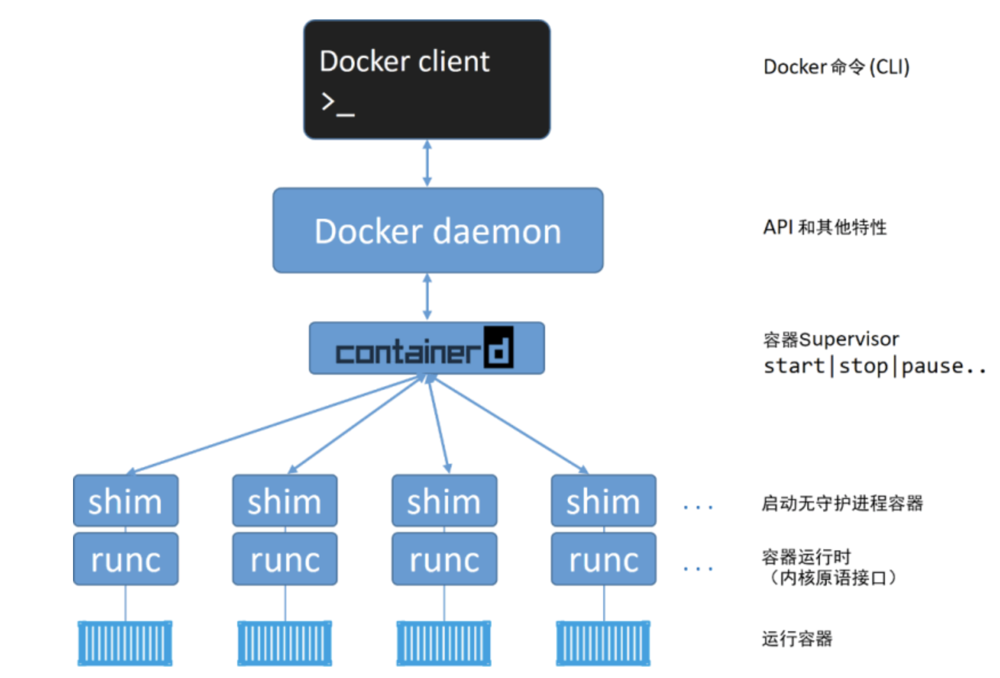

Docker 安装教程
Docker 包括
Docker 需要操作系统、管理工具、runtime
- 操作系统推荐使用 centos/unbunt ，而 windows 和 mac 在使用过程中会有一些网络问题，作为服务器使用 Linux 也更为轻便和通用
- 管理工具 - Docker Engine
- runtime （runc）是 OCI 容器运行时规范的参考实现，runc 生来只有一个作用——创建容器
Docker Engine 包括

- Docker CLI — docker向外暴露的命令行接口（Command Line API）
- Docker Daemon — docker 的守护进程，属于C/S中的server；向外暴露了 REST 接口(docker REST API)，包含 containerd
- containerd 在对 Docker daemon 的功能进行拆解后，所有的容器执行逻辑被重构到一个新的名为 containerd（发音为 container-dee）的工具中，它的主要任务是容器的生命周期管理
因此，客户端访问服务端的方式有两种
- 一种是使用命令行工具，比如docker run， docker ps....
- 另一种就是直接通过调用REST API，比如发送一个curl http请求
安装说明
- 前提：能上网
- 命令行版本：CentOS、Debian、Fedora、Raspbian、Ubuntu
- 桌面版： macOS、Windows
- 安装网址：https://docs.docker.com/engine/install/
公众号
如果你想订阅我的文章，可以微信扫码关注我的公众号【机智的程序员小熊】，我是一个爱思考的程序员，专注于开发、运维、云技术、计算、网络、云存储、数据库、linux等编程知识